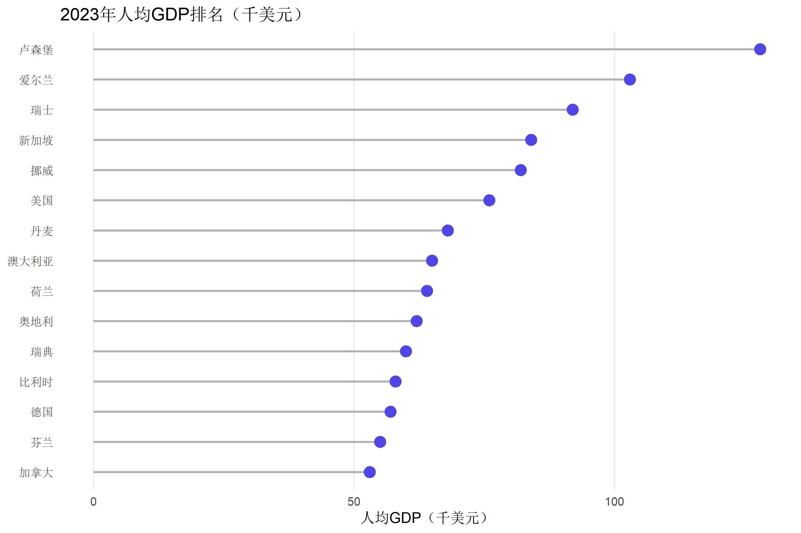
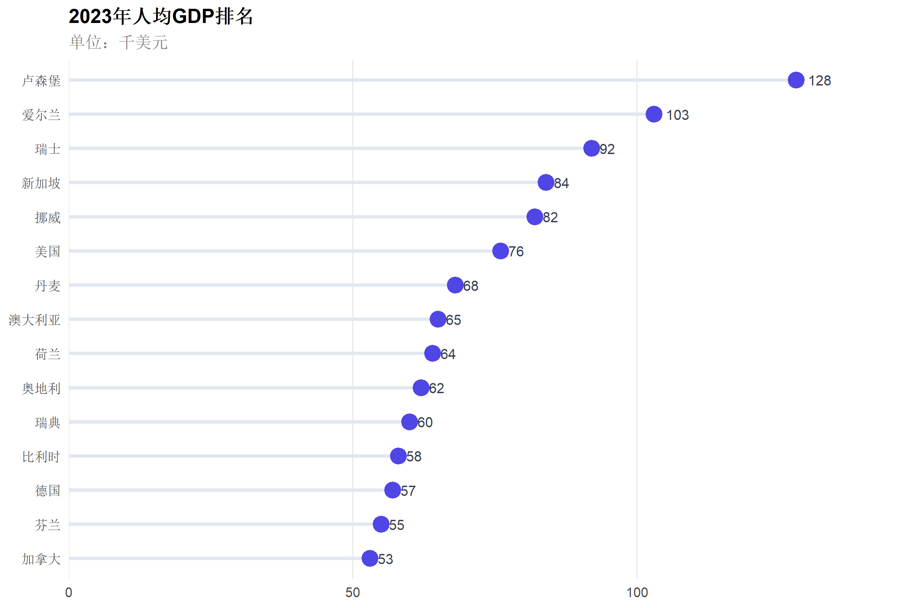
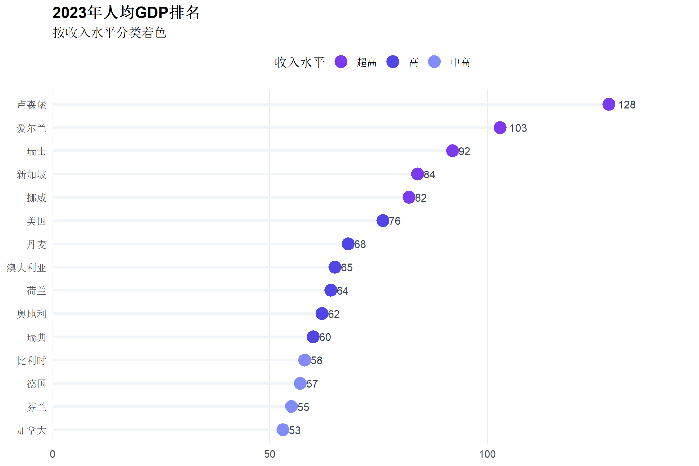
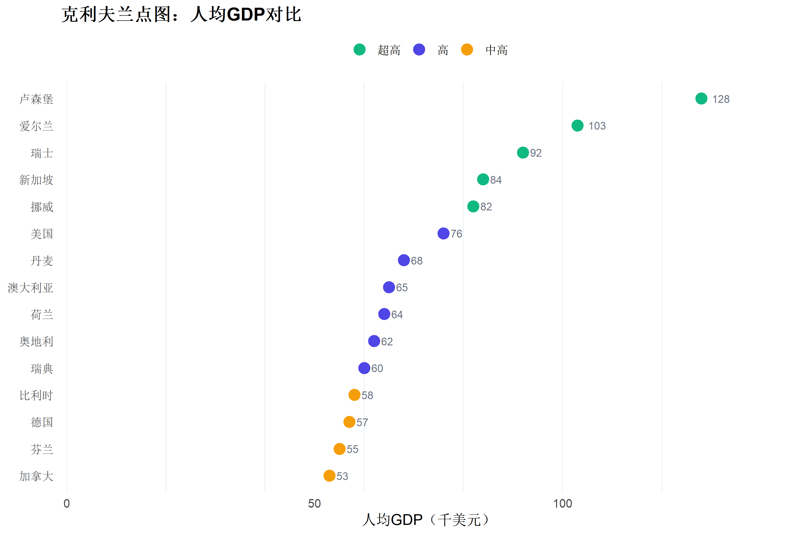
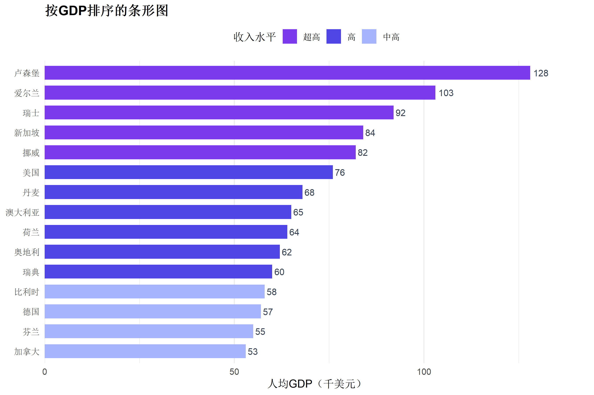
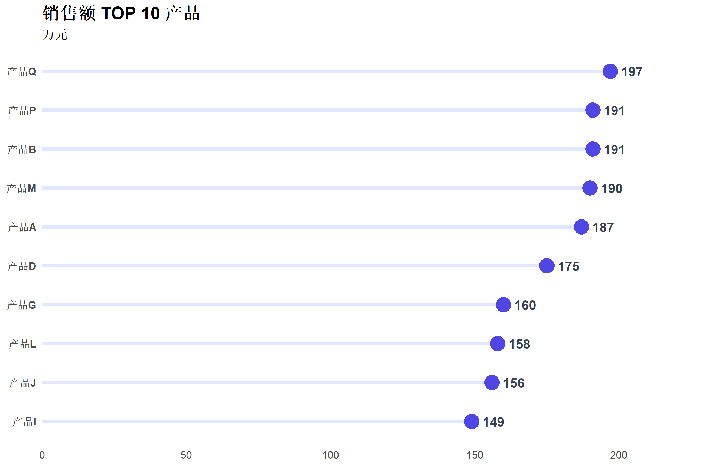
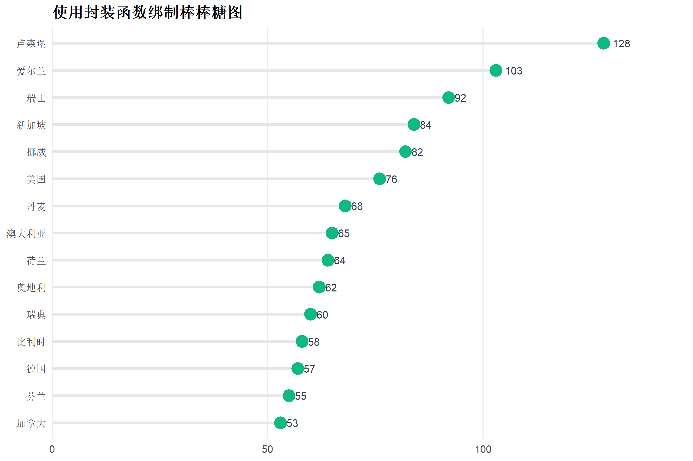

# 加载核心包
library(ggplot2)
library(dplyr)
library(scales)
library(forcats)R语言哑铃图与坡度图绑制
可视化教程
统计图表
比较图
什么是棒棒糖图
棒棒糖图（Lollipop Chart）是一种结合了条形图和散点图特点的可视化方式。它用一条细线（“棒”）连接数据点（“糖”），相比传统柱状图，视觉更轻盈，更适合展示排序数据和排名信息。
适用场景
| 场景 | 说明 |
|---|---|
| 排名展示 | 销售排行、绩效排名、TOP N 分析 |
| 有序分类比较 | 各部门业绩、各地区数据对比 |
| 突出末端数值 | 强调具体数值而非面积 |
| 减少视觉噪音 | 当分类较多时比柱状图更清爽 |
相关图表家族
| 图表类型 | 特点 |
|---|---|
| 棒棒糖图 | 点+线，轻盈美观 |
| 克利夫兰点图 | 仅用点，极简风格 |
| 有序条形图 | 按数值排序的条形图 |
| 分组棒棒糖 | 多组比较 |
R包安装与加载
对于进阶效果，可使用 ggalt 包：
# 可选安装（提供额外geom）
install.packages("ggalt")基础棒棒糖图
准备示例数据
# 创建示例数据：各国2023年人均GDP（简化版）
gdp_data <- data.frame(
country = c(
"卢森堡", "新加坡", "爱尔兰", "瑞士", "挪威",
"美国", "丹麦", "荷兰", "奥地利", "德国",
"澳大利亚", "瑞典", "比利时", "加拿大", "芬兰"
),
gdp = c(
128, 84, 103, 92, 82, 76, 68, 64, 62, 57,
65, 60, 58, 53, 55
)
)
head(gdp_data) country gdp
1 卢森堡 128
2 新加坡 84
3 爱尔兰 103
4 瑞士 92
5 挪威 82
6 美国 76绑制基础棒棒糖图
棒棒糖图的核心是 geom_segment() + geom_point() 的组合：
# 先按GDP排序
gdp_data <- gdp_data %>%
mutate(country = fct_reorder(country, gdp))
# 基础棒棒糖图
ggplot(gdp_data, aes(x = gdp, y = country)) +
# 绘制"棒"（线段）
geom_segment(
aes(x = 0, xend = gdp, y = country, yend = country),
color = "gray70",
linewidth = 0.8
) +
# 绘制"糖"（圆点）
geom_point(
size = 4,
color = "#4f46e5"
) +
labs(
title = "2023年人均GDP排名（千美元）",
x = "人均GDP（千美元）",
y = NULL
) +
theme_minimal(base_size = 12) +
theme(
panel.grid.major.y = element_blank(),
panel.grid.minor = element_blank()
)
代码解析
| 组件 | 作用 |
|---|---|
geom_segment() |
绘制从原点到数据点的线段 |
geom_point() |
绘制末端的圆点 |
fct_reorder() |
按数值重新排列因子顺序 |
panel.grid.major.y = element_blank() |
移除水平网格线使图表更清爽 |
美化棒棒糖图
添加数值标签
ggplot(gdp_data, aes(x = gdp, y = country)) +
geom_segment(
aes(x = 0, xend = gdp, y = country, yend = country),
color = "#e2e8f0",
linewidth = 1.2
) +
geom_point(
size = 5,
color = "#4f46e5"
) +
# 添加数值标签
geom_text(
aes(label = gdp),
hjust = -0.5, # 标签在点右侧
size = 3.5,
color = "#374151"
) +
# 扩展x轴留出标签空间
scale_x_continuous(expand = expansion(mult = c(0, 0.15))) +
labs(
title = "2023年人均GDP排名",
subtitle = "单位：千美元",
x = NULL,
y = NULL
) +
theme_minimal(base_size = 12) +
theme(
panel.grid.major.y = element_blank(),
panel.grid.minor = element_blank(),
plot.title = element_text(face = "bold", size = 14),
plot.subtitle = element_text(color = "gray50")
)
条件着色
根据数值大小使用不同颜色：
# 添加分组标签
gdp_data <- gdp_data %>%
mutate(
gdp_group = case_when(
gdp >= 80 ~ "超高",
gdp >= 60 ~ "高",
TRUE ~ "中高"
)
)
ggplot(gdp_data, aes(x = gdp, y = country)) +
geom_segment(
aes(x = 0, xend = gdp, y = country, yend = country),
color = "#f1f5f9",
linewidth = 1.2
) +
geom_point(
aes(color = gdp_group),
size = 5
) +
geom_text(
aes(label = gdp),
hjust = -0.5,
size = 3.5,
color = "#374151"
) +
scale_color_manual(
values = c("超高" = "#7c3aed", "高" = "#4f46e5", "中高" = "#818cf8")
) +
scale_x_continuous(expand = expansion(mult = c(0, 0.15))) +
labs(
title = "2023年人均GDP排名",
subtitle = "按收入水平分类着色",
x = NULL,
y = NULL,
color = "收入水平"
) +
theme_minimal(base_size = 12) +
theme(
panel.grid.major.y = element_blank(),
panel.grid.minor = element_blank(),
legend.position = "top",
plot.title = element_text(face = "bold")
)
克利夫兰点图 (Cleveland Dot Plot)
克利夫兰点图是棒棒糖图的极简版本，只保留点，去掉线段：
ggplot(gdp_data, aes(x = gdp, y = country)) +
# 添加竖向网格辅助阅读
geom_vline(
xintercept = seq(0, 120, by = 20),
color = "#f1f5f9",
linewidth = 0.5
) +
# 只用点
geom_point(
aes(color = gdp_group),
size = 4
) +
geom_text(
aes(label = gdp),
hjust = -0.6,
size = 3,
color = "#6b7280"
) +
scale_color_manual(
values = c("超高" = "#10b981", "高" = "#4f46e5", "中高" = "#f59e0b")
) +
scale_x_continuous(expand = expansion(mult = c(0.01, 0.15))) +
labs(
title = "克利夫兰点图：人均GDP对比",
x = "人均GDP（千美元）",
y = NULL,
color = NULL
) +
theme_minimal(base_size = 12) +
theme(
panel.grid = element_blank(),
legend.position = "top",
plot.title = element_text(face = "bold")
)
水平排序条形图
当需要更强调数值差异时，使用传统的排序条形图：
ggplot(gdp_data, aes(x = gdp, y = country, fill = gdp_group)) +
geom_col(width = 0.7) +
geom_text(
aes(label = gdp),
hjust = -0.2,
size = 3.5,
color = "#374151"
) +
scale_fill_manual(
values = c("超高" = "#7c3aed", "高" = "#4f46e5", "中高" = "#a5b4fc")
) +
scale_x_continuous(expand = expansion(mult = c(0, 0.12))) +
labs(
title = "按GDP排序的条形图",
x = "人均GDP（千美元）",
y = NULL,
fill = "收入水平"
) +
theme_minimal(base_size = 12) +
theme(
panel.grid.major.y = element_blank(),
legend.position = "top",
plot.title = element_text(face = "bold")
)
分组棒棒糖图
比较多个类别的数据：
# 创建分组数据
compare_data <- data.frame(
country = rep(c("中国", "美国", "日本", "德国", "英国"), each = 2),
year = rep(c("2020", "2023"), 5),
value = c(10.5, 12.7, 63.5, 76.0, 40.1, 34.2, 46.2, 57.0, 41.1, 48.0)
)
compare_data <- compare_data %>%
mutate(country = fct_reorder(country, value, .fun = max, .desc = TRUE))
ggplot(compare_data, aes(x = value, y = country, color = year)) +
geom_segment(
aes(x = 0, xend = value, y = country, yend = country),
linewidth = 1,
alpha = 0.6
) +
geom_point(
size = 5,
position = position_dodge(width = 0.5)
) +
scale_color_manual(values = c("2020" = "#94a3b8", "2023" = "#4f46e5")) +
labs(
title = "主要经济体人均GDP变化",
subtitle = "2020 vs 2023（千美元）",
x = "人均GDP",
y = NULL,
color = "年份"
) +
theme_minimal(base_size = 12) +
theme(
panel.grid.major.y = element_blank(),
legend.position = "top",
plot.title = element_text(face = "bold")
)
TOP N 筛选展示
当数据量较大时，只展示排名靠前的项目：
# 创建较大数据集
set.seed(42)
large_data <- data.frame(
item = paste0("产品", LETTERS[1:20]),
sales = round(runif(20, 50, 200), 0)
)
# 只展示 TOP 10
top_10 <- large_data %>%
slice_max(sales, n = 10) %>%
mutate(item = fct_reorder(item, sales))
ggplot(top_10, aes(x = sales, y = item)) +
geom_segment(
aes(x = 0, xend = sales, y = item, yend = item),
color = "#e0e7ff",
linewidth = 1.5
) +
geom_point(
size = 6,
color = "#4f46e5"
) +
geom_text(
aes(label = sales),
hjust = -0.5,
fontface = "bold",
color = "#374151"
) +
scale_x_continuous(expand = expansion(mult = c(0, 0.15))) +
labs(
title = "销售额 TOP 10 产品",
subtitle = "万元",
x = NULL,
y = NULL
) +
theme_minimal(base_size = 12) +
theme(
panel.grid = element_blank(),
plot.title = element_text(face = "bold", size = 16),
axis.text.y = element_text(face = "bold")
)
水平/垂直方向切换
棒棒糖图可以是水平或垂直方向，根据需要选择：
垂直棒棒糖图
# 使用TOP 8数据
top_8 <- large_data %>%
slice_max(sales, n = 8) %>%
mutate(item = fct_reorder(item, sales))
ggplot(top_8, aes(x = item, y = sales)) +
geom_segment(
aes(x = item, xend = item, y = 0, yend = sales),
color = "#c7d2fe",
linewidth = 1.5
) +
geom_point(
size = 6,
color = "#4f46e5"
) +
geom_text(
aes(label = sales),
vjust = -1,
fontface = "bold",
color = "#374151"
) +
scale_y_continuous(expand = expansion(mult = c(0, 0.12))) +
labs(
title = "垂直方向棒棒糖图",
x = NULL,
y = "销售额（万元）"
) +
theme_minimal(base_size = 12) +
theme(
panel.grid.major.x = element_blank(),
plot.title = element_text(face = "bold")
)
实用函数封装
创建一个快速绑制棒棒糖图的函数：
#' 快速绘制棒棒糖图
#' @param data 数据框
#' @param x 数值变量名（字符串）
#' @param y 分类变量名（字符串）
#' @param color 点的颜色
#' @param show_value 是否显示数值标签
#' @param title 图表标题
plot_lollipop <- function(data, x, y,
color = "#4f46e5",
show_value = TRUE,
title = NULL) {
# 按数值排序
data <- data %>%
mutate(!!sym(y) := fct_reorder(!!sym(y), !!sym(x)))
p <- ggplot(data, aes(x = .data[[x]], y = .data[[y]])) +
geom_segment(
aes(
x = 0, xend = .data[[x]],
y = .data[[y]], yend = .data[[y]]
),
color = "#e5e7eb",
linewidth = 1.2
) +
geom_point(size = 5, color = color)
if (show_value) {
p <- p + geom_text(
aes(label = round(.data[[x]], 1)),
hjust = -0.5,
size = 3.5,
color = "#374151"
) +
scale_x_continuous(expand = expansion(mult = c(0, 0.15)))
}
p + labs(title = title, x = NULL, y = NULL) +
theme_minimal(base_size = 12) +
theme(
panel.grid.major.y = element_blank(),
panel.grid.minor = element_blank(),
plot.title = element_text(face = "bold")
)
}
# 使用示例
plot_lollipop(gdp_data, "gdp", "country",
color = "#10b981",
title = "使用封装函数绑制棒棒糖图"
)
总结
| 图表类型 | 适用场景 | 核心代码 |
|---|---|---|
| 棒棒糖图 | 排名展示、有序比较 | geom_segment() + geom_point() |
| 克利夫兰点图 | 极简风格、减少视觉噪音 | 仅 geom_point() |
| 排序条形图 | 强调数值差异面积 | geom_col() + fct_reorder() |
| 分组棒棒糖 | 多组时间点对比 | 添加 color 映射 |
设计建议
- 保持排序：始终按数值排序使图表更易读
- 控制数量：超过15个分类时考虑只展示 TOP N
- 简化网格：移除 y 轴网格线使图表更清爽
- 添加数值：在点旁添加具体数值提升可读性
- 区分颜色：使用颜色编码区分相关重要类别
相关教程
{r setup, include=FALSE} knitr::opts_chunk$set( echo = TRUE, warning = FALSE, message = FALSE, fig.width = 9, fig.height = 6, fig.retina = 2, out.width = "100%", dpi = 150 )
什么是发散型图表
发散型图表（Diverging Charts）是一类以参考线为中心，向两侧延伸展示正负值或高低差异的可视化方式。它特别适合展示数据相对于某个基准值的偏离程度。
适用场景
| 场景 | 说明 |
|---|---|
| 正负值对比 | 盈亏、增减、超预算/未达 |
| 满意度调查 | 高于/低于中性值的分布 |
| 相对变化 | 同比增长/下降 |
| 基准偏离 | 与平均值、目标值的差距 |
发散型图表家族
| 图表类型 | 特点 |
|---|---|
| 发散型条形图 | 以0为中心，正负条向两侧延伸 |
| 发散型棒棒糖图 | 轻盈版本的发散条形图 |
| 发散型点图 | 用点标记偏离程度 |
| 发散型堆叠条形图 | 李克特量表可视化常用 |
R包安装与加载
library(ggplot2)
library(dplyr)
library(forcats)
library(scales)准备示例数据
# 创建示例数据：各部门业绩相对于目标的偏离
performance_data <- data.frame(
department = c(
"销售一部", "销售二部", "市场部", "研发部", "运营部",
"客服部", "财务部", "人力资源", "采购部", "IT部门"
),
actual = c(125, 118, 95, 105, 88, 102, 97, 110, 78, 115),
target = rep(100, 10)
)
# 计算偏离值和分组
performance_data <- performance_data %>%
mutate(
deviation = actual - target, # 偏离值
status = ifelse(deviation >= 0, "超额完成", "未达标"),
department = fct_reorder(department, deviation) # 按偏离值排序
)
performance_data基础发散型条形图
发散型条形图的核心是将数据分为正负两部分，以0为基准线：
ggplot(performance_data, aes(x = deviation, y = department, fill = status)) +
geom_col(width = 0.7) +
# 添加基准线
geom_vline(xintercept = 0, color = "#1f2937", linewidth = 0.8) +
# 颜色设置
scale_fill_manual(
values = c("超额完成" = "#10b981", "未达标" = "#ef4444")
) +
labs(
title = "各部门业绩完成情况",
subtitle = "相对于目标值的偏离（%）",
x = "偏离目标值（%）",
y = NULL,
fill = NULL
) +
theme_minimal(base_size = 12) +
theme(
panel.grid.major.y = element_blank(),
legend.position = "top",
plot.title = element_text(face = "bold", size = 14)
)代码解析
| 组件 | 作用 |
|---|---|
geom_col() |
绑制条形图，正值向右、负值向左 |
geom_vline(xintercept = 0) |
添加基准线 |
fct_reorder() |
按偏离值排序便于阅读 |
scale_fill_manual() |
自定义正负值颜色 |
美化发散型条形图
添加数值标签
ggplot(performance_data, aes(x = deviation, y = department, fill = status)) +
geom_col(width = 0.7) +
geom_vline(xintercept = 0, color = "#374151", linewidth = 1) +
# 添加数值标签
geom_text(
aes(
label = paste0(ifelse(deviation > 0, "+", ""), deviation, "%"),
hjust = ifelse(deviation >= 0, -0.2, 1.2)
),
size = 3.5,
fontface = "bold"
) +
scale_fill_manual(
values = c("超额完成" = "#10b981", "未达标" = "#ef4444")
) +
scale_x_continuous(
limits = c(-30, 35),
breaks = seq(-30, 30, by = 10)
) +
labs(
title = "各部门业绩完成情况",
subtitle = "相对于目标值的偏离百分比",
x = NULL,
y = NULL,
fill = NULL
) +
theme_minimal(base_size = 12) +
theme(
panel.grid.major.y = element_blank(),
panel.grid.minor = element_blank(),
legend.position = "top",
plot.title = element_text(face = "bold", size = 14),
axis.text.x = element_blank()
)渐变色着色
使用颜色渐变来表示偏离程度：
ggplot(performance_data, aes(x = deviation, y = department, fill = deviation)) +
geom_col(width = 0.7) +
geom_vline(xintercept = 0, color = "#374151", linewidth = 1) +
geom_text(
aes(
label = paste0(ifelse(deviation > 0, "+", ""), deviation),
hjust = ifelse(deviation >= 0, -0.2, 1.2)
),
size = 3.5,
color = "#374151"
) +
# 发散型渐变色
scale_fill_gradient2(
low = "#ef4444", # 负值颜色
mid = "#f5f5f4", # 中间值颜色
high = "#10b981", # 正值颜色
midpoint = 0 # 中点设为0
) +
scale_x_continuous(limits = c(-30, 35)) +
labs(
title = "业绩偏离热图",
subtitle = "颜色深浅表示偏离程度",
x = "偏离目标值（%）",
y = NULL
) +
theme_minimal(base_size = 12) +
theme(
panel.grid.major.y = element_blank(),
legend.position = "none",
plot.title = element_text(face = "bold")
)发散型棒棒糖图
将条形图改为棒棒糖图，视觉更轻盈：
ggplot(performance_data, aes(x = deviation, y = department, color = status)) +
# 绘制线段
geom_segment(
aes(x = 0, xend = deviation, y = department, yend = department),
linewidth = 1.2
) +
# 绘制点
geom_point(size = 5) +
# 基准线
geom_vline(xintercept = 0, color = "#374151", linewidth = 0.8) +
# 数值标签
geom_text(
aes(
label = paste0(ifelse(deviation > 0, "+", ""), deviation),
hjust = ifelse(deviation >= 0, -0.8, 1.8)
),
size = 3.5,
show.legend = FALSE
) +
scale_color_manual(
values = c("超额完成" = "#10b981", "未达标" = "#ef4444")
) +
scale_x_continuous(limits = c(-35, 40)) +
labs(
title = "发散型棒棒糖图",
subtitle = "各部门业绩偏离情况",
x = "偏离目标值（%）",
y = NULL,
color = NULL
) +
theme_minimal(base_size = 12) +
theme(
panel.grid.major.y = element_blank(),
legend.position = "top",
plot.title = element_text(face = "bold")
)李克特量表发散型堆叠图
李克特量表（Likert Scale）常用于问卷调查，发散型堆叠图是展示此类数据的经典方式：
# 创建李克特量表数据
likert_data <- data.frame(
question = c("产品质量", "服务态度", "交付速度", "价格合理", "售后支持"),
strongly_disagree = c(5, 3, 8, 12, 6),
disagree = c(12, 8, 15, 18, 11),
neutral = c(18, 15, 22, 20, 25),
agree = c(35, 38, 32, 30, 33),
strongly_agree = c(30, 36, 23, 20, 25)
)
# 转换为长格式
library(tidyr)
likert_long <- likert_data %>%
pivot_longer(
cols = -question,
names_to = "response",
values_to = "percentage"
) %>%
mutate(
response = factor(response, levels = c(
"strongly_disagree", "disagree", "neutral", "agree", "strongly_agree"
)),
# 发散型处理：负面放左边，正面放右边
percentage_adj = case_when(
response %in% c("strongly_disagree", "disagree") ~ -percentage,
response == "neutral" ~ 0,
TRUE ~ percentage
),
sentiment = case_when(
response %in% c("strongly_disagree", "disagree") ~ "负面",
response == "neutral" ~ "中性",
TRUE ~ "正面"
)
)
# 计算堆叠位置
likert_stacked <- likert_long %>%
filter(response != "neutral") %>%
group_by(question, sentiment) %>%
mutate(
position = cumsum(abs(percentage_adj)) - abs(percentage_adj) / 2,
position = ifelse(sentiment == "负面", -position, position)
) %>%
ungroup()
# 绑制发散型堆叠图
ggplot(likert_stacked, aes(y = question)) +
geom_col(
aes(x = percentage_adj, fill = response),
position = "stack",
width = 0.7
) +
geom_vline(xintercept = 0, color = "#374151", linewidth = 1) +
scale_fill_manual(
values = c(
"strongly_disagree" = "#dc2626",
"disagree" = "#f87171",
"neutral" = "#d4d4d4",
"agree" = "#4ade80",
"strongly_agree" = "#16a34a"
),
labels = c("非常不同意", "不同意", "中立", "同意", "非常同意")
) +
scale_x_continuous(
limits = c(-50, 80),
breaks = seq(-40, 80, by = 20),
labels = abs
) +
labs(
title = "客户满意度调查结果",
subtitle = "发散型李克特量表可视化",
x = "响应比例（%）",
y = NULL,
fill = NULL
) +
theme_minimal(base_size = 12) +
theme(
panel.grid.major.y = element_blank(),
legend.position = "top",
plot.title = element_text(face = "bold")
)蝴蝶图 / 金字塔对比图
蝴蝶图是一种特殊的发散型图表，用于两组数据的对称比较：
# 创建对比数据
compare_data <- data.frame(
category = c("18-24岁", "25-34岁", "35-44岁", "45-54岁", "55-64岁", "65岁+"),
group_a = c(15, 28, 32, 25, 18, 12),
group_b = c(18, 35, 28, 22, 15, 10)
)
# 转换为发散型格式
butterfly_data <- compare_data %>%
mutate(
group_a = -group_a, # A组放左边（负值）
category = factor(category, levels = category)
) %>%
pivot_longer(
cols = c(group_a, group_b),
names_to = "group",
values_to = "value"
) %>%
mutate(
group_label = ifelse(group == "group_a", "2022年", "2023年")
)
ggplot(butterfly_data, aes(x = value, y = category, fill = group_label)) +
geom_col(width = 0.7) +
geom_vline(xintercept = 0, color = "#374151", linewidth = 1) +
# 添加标签
geom_text(
aes(
label = abs(value),
hjust = ifelse(value < 0, 1.2, -0.2)
),
size = 3.5,
color = "#374151"
) +
scale_fill_manual(values = c("2022年" = "#818cf8", "2023年" = "#4f46e5")) +
scale_x_continuous(
limits = c(-40, 45),
breaks = seq(-40, 40, by = 10),
labels = abs
) +
labs(
title = "用户年龄分布变化",
subtitle = "蝴蝶图对比 2022 vs 2023",
x = "用户比例（%）",
y = NULL,
fill = NULL
) +
theme_minimal(base_size = 12) +
theme(
panel.grid.major.y = element_blank(),
legend.position = "top",
plot.title = element_text(face = "bold")
)实用函数封装
创建一个快速绑制发散型条形图的函数：
#' 快速绘制发散型条形图
#' @param data 数据框
#' @param y_var 分类变量名（字符串）
#' @param value_var 数值变量名（字符串）
#' @param positive_color 正值颜色
#' @param negative_color 负值颜色
#' @param title 图表标题
plot_diverging_bar <- function(data, y_var, value_var,
positive_color = "#10b981",
negative_color = "#ef4444",
title = NULL) {
data <- data %>%
mutate(
status = ifelse(.data[[value_var]] >= 0, "positive", "negative"),
!!sym(y_var) := fct_reorder(.data[[y_var]], .data[[value_var]])
)
ggplot(data, aes(x = .data[[value_var]], y = .data[[y_var]], fill = status)) +
geom_col(width = 0.7) +
geom_vline(xintercept = 0, color = "#374151", linewidth = 1) +
scale_fill_manual(
values = c("positive" = positive_color, "negative" = negative_color)
) +
labs(title = title, x = NULL, y = NULL) +
theme_minimal(base_size = 12) +
theme(
panel.grid.major.y = element_blank(),
legend.position = "none",
plot.title = element_text(face = "bold")
)
}
# 使用示例
plot_diverging_bar(
performance_data, "department", "deviation",
title = "使用封装函数绑制发散型条形图"
)总结
| 图表类型 | 适用场景 | 核心技巧 |
|---|---|---|
| 发散型条形图 | 正负值对比 | geom_col() + geom_vline(xintercept=0) |
| 发散型棒棒糖图 | 轻盈版正负对比 | geom_segment() + geom_point() |
| 渐变发散图 | 强调偏离程度 | scale_fill_gradient2() |
| 李克特量表图 | 问卷调查结果 | 发散型堆叠条形图 |
| 蝴蝶图 | 两组对称比较 | 一组取负值 |
设计建议
- 保持基准线清晰：0线或参考线要明显
- 颜色对比鲜明：正负使用对比色（绿/红、蓝/橙）
- 排序增强可读性：按数值大小排列
- 添加数值标签：方便精确阅读
- 对称轴刻度：使用
labels = abs让左右刻度显示正数
相关教程
{r setup, include=FALSE} knitr::opts_chunk$set( echo = TRUE, warning = FALSE, message = FALSE, fig.width = 9, fig.height = 6, fig.retina = 2, out.width = "100%", dpi = 150 )
什么是华夫饼图和树形图
华夫饼图（Waffle Chart）和树形图（Treemap）都是用于展示部分与整体关系的可视化方式，是饼图的优秀替代方案。
华夫饼图
华夫饼图将数据表示为格子网格，每个格子代表相同的单位量，通过填充不同颜色的格子数量来展示比例关系。
优点： - 比饼图更易于精确比较比例 - 人眼更擅长计数矩形而非扇形角度 - 视觉吸引力强，适合信息图
树形图
树形图使用嵌套矩形来表示层级结构数据，矩形面积表示数值大小。
优点： - 高效利用空间 - 适合展示层级结构 - 可同时显示大量类别
R包安装与加载
# 核心绑图包
library(ggplot2)
library(dplyr)
# 华夫饼图包
# install.packages("waffle")
library(waffle)
# 树形图包
# install.packages("treemapify")
library(treemapify)基础华夫饼图
准备数据
# 市场份额数据
market_share <- c(
"品牌A" = 35,
"品牌B" = 28,
"品牌C" = 22,
"其他" = 15
)使用 waffle 包绑制
{r fig.height=4} waffle( market_share, rows = 5, # 行数 size = 0.5, # 格子间距 colors = c("#4f46e5", "#10b981", "#f59e0b", "#94a3b8"), title = "市场份额分布", xlab = "每个格子 = 1%" )
代码解析
| 参数 | 说明 |
|---|---|
rows |
网格行数，数值越大格子越小 |
size |
格子之间的间隙大小 |
colors |
各类别的颜色 |
title |
图表标题 |
xlab |
x轴标签说明单位含义 |
使用 ggplot2 手动绑制华夫饼图
如果需要更多自定义，可以用 ggplot2 手动绑制：
# 创建华夫数据
create_waffle_data <- function(values, rows = 10) {
total <- sum(values)
cols <- ceiling(total / rows)
# 创建每个格子的数据
cells <- data.frame(
x = rep(1:cols, each = rows),
y = rep(1:rows, times = cols)
)[1:total, ]
# 分配类别
category <- rep(names(values), times = values)
cells$category <- factor(category, levels = names(values))
cells
}
waffle_data <- create_waffle_data(market_share, rows = 10)
ggplot(waffle_data, aes(x = x, y = y, fill = category)) +
geom_tile(color = "white", linewidth = 0.5) +
scale_fill_manual(
values = c("#4f46e5", "#10b981", "#f59e0b", "#94a3b8")
) +
coord_equal() +
labs(
title = "市场份额 - 华夫饼图",
subtitle = "每个格子代表 1%",
fill = NULL
) +
theme_void() +
theme(
legend.position = "bottom",
plot.title = element_text(face = "bold", size = 14, hjust = 0.5),
plot.subtitle = element_text(hjust = 0.5, color = "gray50")
)圆形华夫饼图（图标阵列）
用图标代替格子，使图表更形象：
```{r fig.height=5} # 使用 waffle 包的 geom_waffle library(ggplot2)
创建数据框
icon_data <- data.frame( category = names(market_share), value = as.numeric(market_share) )
ggplot(icon_data, aes(fill = category, values = value)) + geom_waffle( n_rows = 5, size = 0.5, color = “white”, flip = TRUE, make_proportional = FALSE ) + scale_fill_manual( values = c(“#4f46e5”, “#10b981”, “#f59e0b”, “#94a3b8”) ) + coord_equal() + labs( title = “市场份额分布”, fill = NULL ) + theme_void() + theme( legend.position = “bottom”, plot.title = element_text(face = “bold”, hjust = 0.5) )
---
## 多组华夫饼图对比
```{r fig.height=5}
# 创建多年数据
multi_year <- data.frame(
year = rep(c("2022年", "2023年"), each = 4),
category = rep(c("品牌A", "品牌B", "品牌C", "其他"), 2),
value = c(30, 32, 25, 13, 35, 28, 22, 15)
)
ggplot(multi_year, aes(fill = category, values = value)) +
geom_waffle(
n_rows = 5,
size = 0.3,
color = "white",
flip = TRUE
) +
facet_wrap(~year, ncol = 2) +
scale_fill_manual(
values = c("#4f46e5", "#10b981", "#f59e0b", "#94a3b8")
) +
coord_equal() +
labs(
title = "市场份额变化对比",
fill = NULL
) +
theme_void() +
theme(
legend.position = "bottom",
plot.title = element_text(face = "bold", hjust = 0.5, size = 14),
strip.text = element_text(face = "bold", size = 12)
)基础树形图
准备层级数据
# 创建层级数据
sales_data <- data.frame(
category = c(
"电子产品", "电子产品", "电子产品",
"服装", "服装", "服装",
"食品", "食品"
),
subcategory = c(
"手机", "电脑", "配件",
"男装", "女装", "童装",
"零食", "饮料"
),
sales = c(450, 380, 120, 280, 350, 150, 200, 180)
)
sales_data绑制基础树形图
ggplot(sales_data, aes(area = sales, fill = category, label = subcategory)) +
geom_treemap() +
geom_treemap_text(
color = "white",
place = "centre",
size = 12
) +
scale_fill_manual(
values = c("#4f46e5", "#10b981", "#f59e0b")
) +
labs(
title = "各品类销售额占比",
fill = "大类"
) +
theme(
plot.title = element_text(face = "bold", size = 14),
legend.position = "bottom"
)嵌套树形图
展示层级关系更清晰：
ggplot(sales_data, aes(
area = sales,
fill = category,
label = subcategory,
subgroup = category
)) +
# 绘制子类矩形
geom_treemap() +
# 子类标签
geom_treemap_text(
color = "white",
place = "centre",
size = 11,
reflow = TRUE
) +
# 大类边框
geom_treemap_subgroup_border(color = "white", size = 3) +
# 大类标签
geom_treemap_subgroup_text(
place = "centre",
grow = TRUE,
alpha = 0.3,
color = "white",
fontface = "bold",
min.size = 0
) +
scale_fill_manual(
values = c("#4f46e5", "#10b981", "#f59e0b")
) +
labs(
title = "销售额层级结构",
subtitle = "嵌套树形图展示大类和子类关系",
fill = "大类"
) +
theme(
plot.title = element_text(face = "bold", size = 14),
legend.position = "none"
)添加数值标签的树形图
# 添加标签文本
sales_data <- sales_data %>%
mutate(
label = paste0(subcategory, "\n¥", sales, "万")
)
ggplot(sales_data, aes(
area = sales,
fill = category,
label = label
)) +
geom_treemap() +
geom_treemap_text(
color = "white",
place = "centre",
size = 10,
grow = FALSE,
reflow = TRUE
) +
scale_fill_manual(
values = c("#4f46e5", "#10b981", "#f59e0b")
) +
labs(
title = "各子品类销售额",
fill = "大类"
) +
theme(
plot.title = element_text(face = "bold", size = 14),
legend.position = "bottom"
)渐变色树形图
使用连续色阶表示数值大小：
ggplot(sales_data, aes(
area = sales,
fill = sales,
label = subcategory
)) +
geom_treemap() +
geom_treemap_text(
color = "white",
place = "centre",
size = 12,
fontface = "bold"
) +
scale_fill_gradient(
low = "#a5b4fc",
high = "#312e81",
name = "销售额(万)"
) +
labs(
title = "销售额热力树形图",
subtitle = "颜色深浅表示销售额高低"
) +
theme(
plot.title = element_text(face = "bold", size = 14),
legend.position = "right"
)华夫饼图 vs 饼图对比
让我们对比两种展示方式：
```{r fig.width=12, fig.height=5} library(patchwork)
华夫饼图
p1 <- ggplot(icon_data, aes(fill = category, values = value)) + geom_waffle( n_rows = 5, size = 0.5, color = “white”, flip = TRUE ) + scale_fill_manual( values = c(“#4f46e5”, “#10b981”, “#f59e0b”, “#94a3b8”) ) + coord_equal() + labs(title = “华夫饼图”, fill = NULL) + theme_void() + theme( legend.position = “bottom”, plot.title = element_text(face = “bold”, hjust = 0.5) )
饼图
p2 <- ggplot(icon_data, aes(x = ““, y = value, fill = category)) + geom_col(width = 1) + coord_polar(theta =”y”) + scale_fill_manual( values = c(“#4f46e5”, “#10b981”, “#f59e0b”, “#94a3b8”) ) + labs(title = “饼图”, fill = NULL) + theme_void() + theme( legend.position = “bottom”, plot.title = element_text(face = “bold”, hjust = 0.5) )
p1 + p2 + plot_annotation( title = “华夫饼图 vs 饼图”, subtitle = “华夫饼图更容易精确比较比例”, theme = theme( plot.title = element_text(face = “bold”, size = 16), plot.subtitle = element_text(color = “gray50”) ) )
---
## 实用函数封装
### 快速华夫饼图
```{r}
#' 快速绘制华夫饼图
#' @param data 命名向量或数据框
#' @param n_rows 行数
#' @param colors 颜色向量
#' @param title 标题
quick_waffle <- function(data, n_rows = 5, colors = NULL, title = NULL) {
if (is.null(colors)) {
colors <- c(
"#4f46e5", "#10b981", "#f59e0b", "#ef4444",
"#8b5cf6", "#06b6d4", "#84cc16", "#94a3b8"
)
}
if (is.data.frame(data)) {
df <- data
} else {
df <- data.frame(
category = names(data),
value = as.numeric(data)
)
}
ggplot(df, aes(fill = category, values = value)) +
geom_waffle(
n_rows = n_rows,
size = 0.4,
color = "white",
flip = TRUE
) +
scale_fill_manual(values = colors[1:nrow(df)]) +
coord_equal() +
labs(title = title, fill = NULL) +
theme_void() +
theme(
legend.position = "bottom",
plot.title = element_text(face = "bold", hjust = 0.5)
)
}
# 使用示例
quick_waffle(market_share, title = "使用封装函数")总结
| 图表类型 | 适用场景 | 核心函数 |
|---|---|---|
| 华夫饼图 | 比例展示、信息图 | waffle() 或 geom_waffle() |
| 树形图 | 层级结构、空间高效 | geom_treemap() + treemapify |
| 嵌套树形图 | 多级层次结构 | geom_treemap_subgroup_*() |
选择建议
| 需求 | 推荐图表 |
|---|---|
| 简单比例比较 | 华夫饼图 |
| 层级结构展示 | 嵌套树形图 |
| 大量类别 | 树形图 |
| 精确数值对比 | 华夫饼图 + 数值标签 |
| 视觉冲击力强 | 图标华夫饼图 |
相关教程
{r setup, include=FALSE} knitr::opts_chunk$set( echo = TRUE, warning = FALSE, message = FALSE, fig.width = 9, fig.height = 7, fig.retina = 2, out.width = "100%", dpi = 150 )
什么是人口金字塔图
人口金字塔图（Population Pyramid）是一种背靠背条形图，是展示人口年龄-性别结构的经典图表。它将两组数据（通常是男性和女性）对称地放在中轴两侧，形成类似金字塔的形状。
适用场景
| 场景 | 说明 |
|---|---|
| 人口统计 | 年龄-性别分布分析 |
| 客户分析 | 用户群体年龄结构 |
| 营销漏斗 | 阶段转化分析 |
| 对比分析 | 任何需要对称比较的两组数据 |
金字塔形状解读
| 形状 | 含义 |
|---|---|
| 正三角形 | 年轻型社会，高出生率 |
| 倒三角形 | 老龄化社会 |
| 矩形/柱形 | 稳定型社会 |
| 葫芦形 | 中间代断层 |
R包加载
library(ggplot2)
library(dplyr)
library(scales)
library(forcats)准备人口数据
# 创建中国人口结构示例数据（简化版）
population_data <- data.frame(
age_group = rep(c(
"0-4", "5-9", "10-14", "15-19", "20-24",
"25-29", "30-34", "35-39", "40-44", "45-49",
"50-54", "55-59", "60-64", "65-69", "70-74",
"75-79", "80+"
), each = 2),
gender = rep(c("男性", "女性"), 17),
population = c(
# 男性, 女性 (百万人)
38, 35, # 0-4
42, 39, # 5-9
40, 37, # 10-14
35, 33, # 15-19
45, 43, # 20-24
52, 50, # 25-29
58, 55, # 30-34
50, 48, # 35-39
55, 52, # 40-44
62, 58, # 45-49
58, 55, # 50-54
48, 46, # 55-59
42, 41, # 60-64
35, 36, # 65-69
25, 28, # 70-74
18, 22, # 75-79
12, 18 # 80+
)
)
# 将年龄组转换为有序因子
population_data <- population_data %>%
mutate(
age_group = factor(age_group, levels = c(
"0-4", "5-9", "10-14", "15-19", "20-24", "25-29", "30-34",
"35-39", "40-44", "45-49", "50-54", "55-59", "60-64", "65-69",
"70-74", "75-79", "80+"
)),
# 将男性人口转为负值
population_adj = ifelse(gender == "男性", -population, population)
)
head(population_data)基础人口金字塔图
ggplot(population_data, aes(x = population_adj, y = age_group, fill = gender)) +
geom_col(width = 0.8) +
# 添加中心轴
geom_vline(xintercept = 0, color = "#374151", linewidth = 0.5) +
# 颜色设置
scale_fill_manual(
values = c("男性" = "#4f46e5", "女性" = "#ec4899")
) +
# 调整x轴刻度（显示正数）
scale_x_continuous(
breaks = seq(-60, 60, by = 20),
labels = abs
) +
labs(
title = "中国人口年龄结构金字塔",
subtitle = "单位：百万人",
x = "人口数量（百万）",
y = "年龄组",
fill = NULL
) +
theme_minimal(base_size = 12) +
theme(
panel.grid.major.y = element_blank(),
legend.position = "top",
plot.title = element_text(face = "bold", size = 14)
)代码解析
| 技巧 | 说明 |
|---|---|
| 男性取负值 | ifelse(gender == "男性", -population, population) |
| 刻度显示正数 | labels = abs 将负数刻度显示为正数 |
| 中心轴 | geom_vline(xintercept = 0) |
美化人口金字塔图
添加数值标签
ggplot(population_data, aes(x = population_adj, y = age_group, fill = gender)) +
geom_col(width = 0.85) +
geom_vline(xintercept = 0, color = "#1f2937", linewidth = 0.8) +
# 添加数值标签
geom_text(
aes(
label = population,
hjust = ifelse(gender == "男性", 1.2, -0.2)
),
size = 2.8,
color = "#374151"
) +
scale_fill_manual(
values = c("男性" = "#3b82f6", "女性" = "#f472b6")
) +
scale_x_continuous(
breaks = seq(-60, 60, by = 20),
labels = abs,
limits = c(-75, 75)
) +
labs(
title = "中国人口年龄结构",
subtitle = "2023年数据（百万人）",
x = NULL,
y = NULL,
fill = NULL
) +
theme_minimal(base_size = 11) +
theme(
panel.grid = element_blank(),
legend.position = "top",
plot.title = element_text(face = "bold", size = 14),
axis.text.x = element_blank()
)使用百分比
# 计算百分比
total_pop <- sum(population_data$population)
population_pct <- population_data %>%
mutate(
pct = population / total_pop * 100,
pct_adj = ifelse(gender == "男性", -pct, pct)
)
ggplot(population_pct, aes(x = pct_adj, y = age_group, fill = gender)) +
geom_col(width = 0.85) +
geom_vline(xintercept = 0, color = "#1f2937", linewidth = 0.8) +
scale_fill_manual(
values = c("男性" = "#4f46e5", "女性" = "#ec4899")
) +
scale_x_continuous(
breaks = seq(-5, 5, by = 1),
labels = function(x) paste0(abs(x), "%"),
limits = c(-6, 6)
) +
labs(
title = "人口年龄分布百分比",
x = "占总人口比例",
y = NULL,
fill = NULL
) +
theme_minimal(base_size = 12) +
theme(
panel.grid.major.y = element_blank(),
legend.position = "top",
plot.title = element_text(face = "bold")
)渐变色金字塔图
使用年龄渐变色增强视觉效果：
# 添加年龄段颜色
library(viridis)
ggplot(population_data, aes(x = population_adj, y = age_group, fill = age_group)) +
geom_col(width = 0.85) +
geom_vline(xintercept = 0, color = "#1f2937", linewidth = 0.8) +
# 使用viridis渐变色
scale_fill_viridis_d(option = "plasma", guide = "none") +
scale_x_continuous(
breaks = seq(-60, 60, by = 20),
labels = abs
) +
labs(
title = "按年龄渐变着色的人口金字塔",
x = "人口数量（百万）",
y = NULL
) +
theme_minimal(base_size = 12) +
theme(
panel.grid.major.y = element_blank(),
plot.title = element_text(face = "bold")
)两期对比金字塔
比较不同年份的人口结构变化：
```{r fig.height=8} # 创建两期数据 multi_year_pop <- rbind( population_data %>% mutate(year = “2023年”), population_data %>% mutate( year = “2013年”, population = population * runif(nrow(population_data), 0.85, 1.1), population_adj = ifelse(gender == “男性”, -population, population) ) )
ggplot(multi_year_pop, aes(x = population_adj, y = age_group, fill = gender)) + geom_col(width = 0.85, position = “identity”, alpha = 0.8) + geom_vline(xintercept = 0, color = “#1f2937”, linewidth = 0.5) + facet_wrap(~year, ncol = 2) + scale_fill_manual( values = c(“男性” = “#4f46e5”, “女性” = “#ec4899”) ) + scale_x_continuous( breaks = seq(-60, 60, by = 20), labels = abs ) + labs( title = “人口结构变化对比（2013 vs 2023）”, x = “人口数量（百万）”, y = NULL, fill = NULL ) + theme_minimal(base_size = 11) + theme( panel.grid.major.y = element_blank(), legend.position = “top”, plot.title = element_text(face = “bold”, size = 14), strip.text = element_text(face = “bold”, size = 12) )
---
## 营销漏斗金字塔
人口金字塔的结构也适用于漏斗分析：
```{r fig.height=5}
# 营销漏斗数据
funnel_data <- data.frame(
stage = factor(c(
"1. 网站访问", "2. 产品浏览", "3. 加入购物车",
"4. 开始结账", "5. 完成支付"
), levels = rev(c(
"1. 网站访问", "2. 产品浏览", "3. 加入购物车",
"4. 开始结账", "5. 完成支付"
))),
male = c(50000, 35000, 15000, 8000, 4000),
female = c(48000, 38000, 18000, 10000, 5500)
)
# 转换格式
funnel_long <- funnel_data %>%
tidyr::pivot_longer(
cols = c(male, female),
names_to = "gender",
values_to = "count"
) %>%
mutate(
count_adj = ifelse(gender == "male", -count, count),
gender = ifelse(gender == "male", "男性用户", "女性用户")
)
ggplot(funnel_long, aes(x = count_adj, y = stage, fill = gender)) +
geom_col(width = 0.7) +
geom_vline(xintercept = 0, color = "#374151", linewidth = 0.8) +
geom_text(
aes(
label = scales::comma(count),
hjust = ifelse(gender == "男性用户", 1.1, -0.1)
),
size = 3.5,
fontface = "bold"
) +
scale_fill_manual(
values = c("男性用户" = "#4f46e5", "女性用户" = "#ec4899")
) +
scale_x_continuous(
labels = function(x) comma(abs(x)),
limits = c(-60000, 60000)
) +
labs(
title = "电商转化漏斗 - 性别对比",
x = "用户数量",
y = NULL,
fill = NULL
) +
theme_minimal(base_size = 12) +
theme(
panel.grid.major.y = element_blank(),
legend.position = "top",
plot.title = element_text(face = "bold", size = 14)
)实用函数封装
#' 快速绘制人口金字塔图
#' @param data 数据框，需包含 age, gender, value 列
#' @param age_col 年龄列名
#' @param gender_col 性别列名
#' @param value_col 数值列名
#' @param male_label 男性标签
#' @param female_label 女性标签
#' @param title 标题
plot_pyramid <- function(data, age_col, gender_col, value_col,
male_label = "男性", female_label = "女性",
colors = c("#4f46e5", "#ec4899"),
title = NULL) {
data <- data %>%
mutate(
value_adj = ifelse(
.data[[gender_col]] == male_label,
-.data[[value_col]],
.data[[value_col]]
)
)
max_val <- max(abs(data$value_adj)) * 1.1
ggplot(data, aes(
x = value_adj,
y = .data[[age_col]],
fill = .data[[gender_col]]
)) +
geom_col(width = 0.8) +
geom_vline(xintercept = 0, color = "#374151", linewidth = 0.8) +
scale_fill_manual(values = setNames(colors, c(male_label, female_label))) +
scale_x_continuous(
breaks = scales::breaks_extended(n = 7),
labels = abs,
limits = c(-max_val, max_val)
) +
labs(title = title, x = NULL, y = NULL, fill = NULL) +
theme_minimal(base_size = 12) +
theme(
panel.grid.major.y = element_blank(),
legend.position = "top",
plot.title = element_text(face = "bold")
)
}
# 使用示例
plot_pyramid(
population_data, "age_group", "gender", "population",
title = "使用封装函数绑制金字塔图"
)总结
| 应用场景 | 说明 |
|---|---|
| 人口分析 | 年龄-性别结构，老龄化趋势 |
| 客户画像 | 用户年龄分布 |
| 漏斗分析 | 转化阶段对比 |
| 时间对比 | 多期结构变化 |
核心技巧
- 男性取负值：
ifelse(gender == "男性", -value, value) - 刻度显示正数：
labels = abs - 有序因子：确保年龄组正确排序
- 中心轴：
geom_vline(xintercept = 0)
相关教程
{r setup, include=FALSE} knitr::opts_chunk$set( echo = TRUE, warning = FALSE, message = FALSE, fig.width = 9, fig.height = 6, fig.retina = 2, out.width = "100%", dpi = 150 )
什么是哑铃图和坡度图
哑铃图（Dumbbell Chart）和坡度图（Slope Chart）都是展示两个时间点或两个条件之间变化的可视化方式，非常适合配对数据对比。
哑铃图
哑铃图用两个点表示两个数值，中间用线连接，形状类似哑铃。适合展示起点和终点的差异。
坡度图
坡度图将两组数值分别放在左右两列，用斜线连接，线的倾斜方向表示变化趋势。
适用场景
| 场景 | 说明 |
|---|---|
| 前后对比 | 干预前后、政策前后 |
| 时间比较 | 年度对比、季度变化 |
| 配对测量 | 同一对象的两次测量 |
| A/B 测试 | 实验组与对照组对比 |
R包加载
library(ggplot2)
library(dplyr)
library(forcats)
library(scales)可选使用 ggalt 包获得更多 geom：
{r eval=FALSE} # install.packages("ggalt") library(ggalt) # 提供 geom_dumbbell()
准备示例数据
# 创建各城市房价变化数据
housing_data <- data.frame(
city = c(
"北京", "上海", "深圳", "广州", "杭州",
"南京", "成都", "武汉", "西安", "苏州"
),
price_2020 = c(62, 58, 55, 32, 35, 28, 18, 20, 15, 25),
price_2023 = c(68, 65, 48, 38, 42, 32, 25, 23, 22, 30)
)
# 计算变化量
housing_data <- housing_data %>%
mutate(
change = price_2023 - price_2020,
change_pct = round((price_2023 - price_2020) / price_2020 * 100, 1),
direction = ifelse(change > 0, "上涨", "下跌"),
city = fct_reorder(city, price_2023) # 按2023年价格排序
)
housing_data基础哑铃图
使用 geom_segment() + geom_point() 构建哑铃图：
ggplot(housing_data) +
# 连接线
geom_segment(
aes(
x = price_2020, xend = price_2023,
y = city, yend = city
),
color = "#94a3b8",
linewidth = 1.5
) +
# 2020年的点
geom_point(
aes(x = price_2020, y = city),
size = 4,
color = "#94a3b8"
) +
# 2023年的点
geom_point(
aes(x = price_2023, y = city),
size = 4,
color = "#4f46e5"
) +
labs(
title = "主要城市房价变化（2020 vs 2023）",
subtitle = "单位：万元/平米",
x = "房价（万元/平米）",
y = NULL
) +
theme_minimal(base_size = 12) +
theme(
panel.grid.major.y = element_blank(),
plot.title = element_text(face = "bold", size = 14)
)添加图例说明
ggplot(housing_data) +
geom_segment(
aes(
x = price_2020, xend = price_2023,
y = city, yend = city
),
color = "#e2e8f0",
linewidth = 2
) +
geom_point(
aes(x = price_2020, y = city, color = "2020年"),
size = 5
) +
geom_point(
aes(x = price_2023, y = city, color = "2023年"),
size = 5
) +
scale_color_manual(
values = c("2020年" = "#94a3b8", "2023年" = "#4f46e5")
) +
labs(
title = "主要城市房价变化",
subtitle = "万元/平米",
x = NULL,
y = NULL,
color = NULL
) +
theme_minimal(base_size = 12) +
theme(
panel.grid.major.y = element_blank(),
legend.position = "top",
plot.title = element_text(face = "bold")
)美化哑铃图
按变化方向着色
ggplot(housing_data) +
geom_segment(
aes(
x = price_2020, xend = price_2023,
y = city, yend = city,
color = direction
),
linewidth = 2.5
) +
geom_point(
aes(x = price_2020, y = city),
size = 5,
color = "#64748b"
) +
geom_point(
aes(x = price_2023, y = city, color = direction),
size = 5
) +
# 添加变化百分比标签
geom_text(
aes(
x = price_2023 + 3, y = city,
label = paste0(ifelse(change > 0, "+", ""), change_pct, "%"),
color = direction
),
size = 3.5,
fontface = "bold",
hjust = 0
) +
scale_color_manual(
values = c("上涨" = "#10b981", "下跌" = "#ef4444")
) +
scale_x_continuous(limits = c(0, 85)) +
labs(
title = "房价涨跌一览",
subtitle = "2020 → 2023",
x = "房价（万元/平米）",
y = NULL,
color = NULL
) +
theme_minimal(base_size = 12) +
theme(
panel.grid.major.y = element_blank(),
legend.position = "top",
plot.title = element_text(face = "bold", size = 14)
)添加数值标签
ggplot(housing_data) +
geom_segment(
aes(
x = price_2020, xend = price_2023,
y = city, yend = city
),
color = "#cbd5e1",
linewidth = 2
) +
geom_point(aes(x = price_2020, y = city), size = 5, color = "#64748b") +
geom_point(aes(x = price_2023, y = city, color = direction), size = 5) +
# 起点数值
geom_text(
aes(x = price_2020, y = city, label = price_2020),
vjust = -1.5,
size = 3,
color = "#64748b"
) +
# 终点数值
geom_text(
aes(x = price_2023, y = city, label = price_2023, color = direction),
vjust = -1.5,
size = 3,
fontface = "bold"
) +
scale_color_manual(
values = c("上涨" = "#10b981", "下跌" = "#ef4444")
) +
labs(
title = "城市房价变化详情",
x = NULL,
y = NULL,
color = NULL
) +
theme_minimal(base_size = 12) +
theme(
panel.grid = element_blank(),
legend.position = "none",
plot.title = element_text(face = "bold")
)坡度图 (Slope Chart)
坡度图将两个时间点分成左右两列：
```{r fig.height=7} # 转换为长格式 library(tidyr)
slope_data <- housing_data %>% select(city, price_2020, price_2023, direction) %>% pivot_longer( cols = c(price_2020, price_2023), names_to = “year”, values_to = “price” ) %>% mutate( year = ifelse(year == “price_2020”, “2020”, “2023”), year_num = ifelse(year == “2020”, 1, 2) )
ggplot(slope_data, aes(x = year_num, y = price, group = city)) + # 连接线 geom_line(aes(color = direction), linewidth = 1.2, alpha = 0.7) + # 端点 geom_point(aes(color = direction), size = 4) + # 左侧城市标签 geom_text( data = slope_data %>% filter(year == “2020”), aes(label = paste(city, price)), hjust = 1.1, size = 3.5, color = “#374151” ) + # 右侧价格标签 geom_text( data = slope_data %>% filter(year == “2023”), aes(label = price, color = direction), hjust = -0.3, size = 3.5, fontface = “bold” ) + scale_color_manual( values = c(“上涨” = “#10b981”, “下跌” = “#ef4444”) ) + scale_x_continuous( breaks = c(1, 2), labels = c(“2020年”, “2023年”), limits = c(0.3, 2.5) ) + labs( title = “城市房价变化趋势”, subtitle = “坡度图展示变化方向”, x = NULL, y = “房价（万元/平米）” ) + theme_minimal(base_size = 12) + theme( panel.grid.major.x = element_blank(), panel.grid.minor = element_blank(), legend.position = “none”, plot.title = element_text(face = “bold”, size = 14), axis.text.x = element_text(face = “bold”, size = 12) )
---
## 突出特定城市
```{r fig.height=7}
# 标记重点城市
highlight_cities <- c("深圳", "杭州", "西安")
slope_data <- slope_data %>%
mutate(
highlight = city %in% highlight_cities,
alpha_val = ifelse(highlight, 1, 0.3)
)
ggplot(slope_data, aes(x = year_num, y = price, group = city)) +
# 背景线（非重点城市）
geom_line(
data = slope_data %>% filter(!highlight),
color = "#cbd5e1",
linewidth = 0.8,
alpha = 0.5
) +
# 重点城市线
geom_line(
data = slope_data %>% filter(highlight),
aes(color = city),
linewidth = 1.5
) +
geom_point(
data = slope_data %>% filter(highlight),
aes(color = city),
size = 4
) +
# 重点城市标签
geom_text(
data = slope_data %>% filter(year == "2023" & highlight),
aes(label = paste(city, price), color = city),
hjust = -0.1,
size = 3.5,
fontface = "bold"
) +
scale_color_manual(
values = c("深圳" = "#ef4444", "杭州" = "#10b981", "西安" = "#4f46e5")
) +
scale_x_continuous(
breaks = c(1, 2),
labels = c("2020年", "2023年"),
limits = c(0.8, 2.6)
) +
labs(
title = "重点城市房价走势",
subtitle = "深圳下跌 vs 杭州、西安上涨",
x = NULL,
y = "房价（万元/平米）"
) +
theme_minimal(base_size = 12) +
theme(
panel.grid.major.x = element_blank(),
legend.position = "none",
plot.title = element_text(face = "bold", size = 14)
)多期坡度图
比较超过两个时间点：
```{r fig.height=6} # 创建多期数据 multi_period <- data.frame( city = rep(c(“北京”, “上海”, “深圳”, “杭州”), each = 4), year = rep(c(2020, 2021, 2022, 2023), 4), price = c( 62, 65, 66, 68, # 北京 58, 62, 64, 65, # 上海 55, 58, 52, 48, # 深圳 35, 38, 40, 42 # 杭州 ) )
ggplot(multi_period, aes(x = year, y = price, color = city, group = city)) + geom_line(linewidth = 1.2) + geom_point(size = 3) + geom_text( data = multi_period %>% filter(year == 2023), aes(label = city), hjust = -0.2, fontface = “bold”, size = 3.5 ) + scale_color_manual( values = c( “北京” = “#4f46e5”, “上海” = “#8b5cf6”, “深圳” = “#ef4444”, “杭州” = “#10b981” ) ) + scale_x_continuous( breaks = 2020:2023, limits = c(2020, 2024) ) + labs( title = “一线城市房价趋势（2020-2023）”, x = NULL, y = “房价（万元/平米）” ) + theme_minimal(base_size = 12) + theme( legend.position = “none”, plot.title = element_text(face = “bold”) )
---
## 使用 ggalt 包的 geom_dumbbell
`ggalt` 包提供了专门的 `geom_dumbbell()` 函数：
```{r}
# 确保安装了 ggalt
if (requireNamespace("ggalt", quietly = TRUE)) {
library(ggalt)
ggplot(housing_data, aes(x = price_2020, xend = price_2023, y = city)) +
geom_dumbbell(
size = 3,
color = "#e5e7eb",
colour_x = "#94a3b8",
colour_xend = "#4f46e5",
size_x = 4,
size_xend = 4
) +
labs(
title = "使用 geom_dumbbell()",
subtitle = "来自 ggalt 包",
x = "房价（万元/平米）",
y = NULL
) +
theme_minimal(base_size = 12) +
theme(
panel.grid.major.y = element_blank(),
plot.title = element_text(face = "bold")
)
} else {
message("请安装 ggalt 包: install.packages('ggalt')")
}实用函数封装
#' 快速绘制哑铃图
#' @param data 数据框
#' @param y_var 分类变量
#' @param start_var 起点数值变量
#' @param end_var 终点数值变量
#' @param start_label 起点标签
#' @param end_label 终点标签
plot_dumbbell <- function(data, y_var, start_var, end_var,
start_label = "起点", end_label = "终点",
start_color = "#94a3b8", end_color = "#4f46e5",
title = NULL) {
data <- data %>%
mutate(!!sym(y_var) := fct_reorder(.data[[y_var]], .data[[end_var]]))
ggplot(data) +
geom_segment(
aes(
x = .data[[start_var]], xend = .data[[end_var]],
y = .data[[y_var]], yend = .data[[y_var]]
),
color = "#e5e7eb",
linewidth = 2
) +
geom_point(
aes(
x = .data[[start_var]], y = .data[[y_var]],
color = start_label
),
size = 5
) +
geom_point(
aes(
x = .data[[end_var]], y = .data[[y_var]],
color = end_label
),
size = 5
) +
scale_color_manual(
values = setNames(c(start_color, end_color), c(start_label, end_label))
) +
labs(title = title, x = NULL, y = NULL, color = NULL) +
theme_minimal(base_size = 12) +
theme(
panel.grid.major.y = element_blank(),
legend.position = "top",
plot.title = element_text(face = "bold")
)
}
# 使用示例
plot_dumbbell(
housing_data, "city", "price_2020", "price_2023",
start_label = "2020", end_label = "2023",
title = "使用封装函数绑制哑铃图"
)总结
| 图表类型 | 特点 | 适用场景 |
|---|---|---|
| 哑铃图 | 水平展示两点差异 | 排名比较、变化幅度 |
| 坡度图 | 斜线展示趋势方向 | 趋势判断、上升/下降 |
| 多期坡度图 | 连续多点趋势 | 时间序列对比 |
核心技巧
- 排序：按终点值排序便于比较
- 颜色编码：用颜色区分上升/下降
- 标签：添加数值标签增强可读性
- 淡化背景：突出重点数据
选择建议
| 需求 | 推荐图表 |
|---|---|
| 强调变化大小 | 哑铃图 |
| 强调变化方向 | 坡度图 |
| 多个时间点 | 多期坡度图/折线图 |
| 大量类别 | 哑铃图（可排序） |